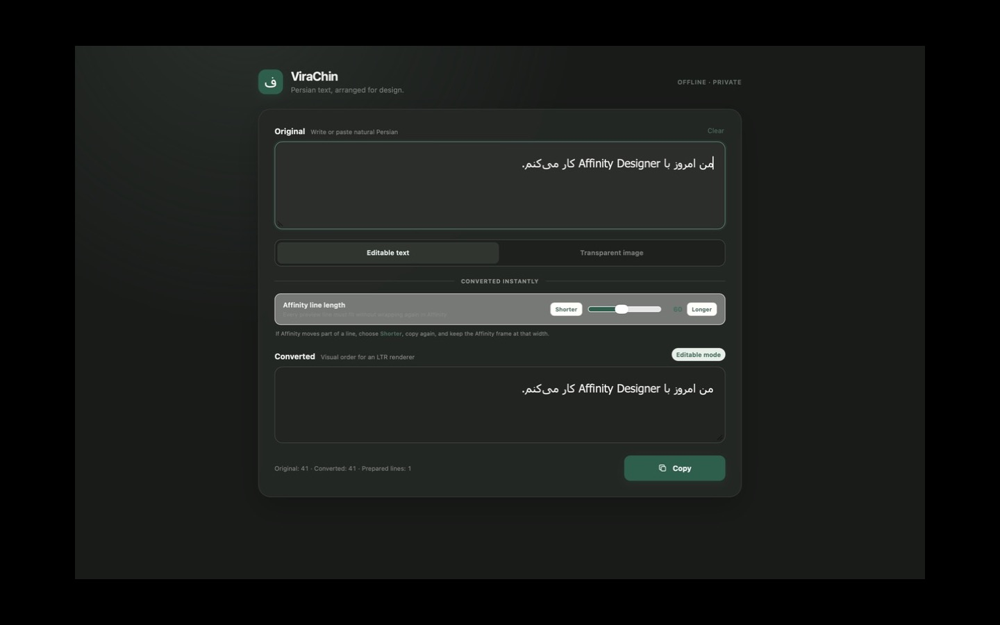
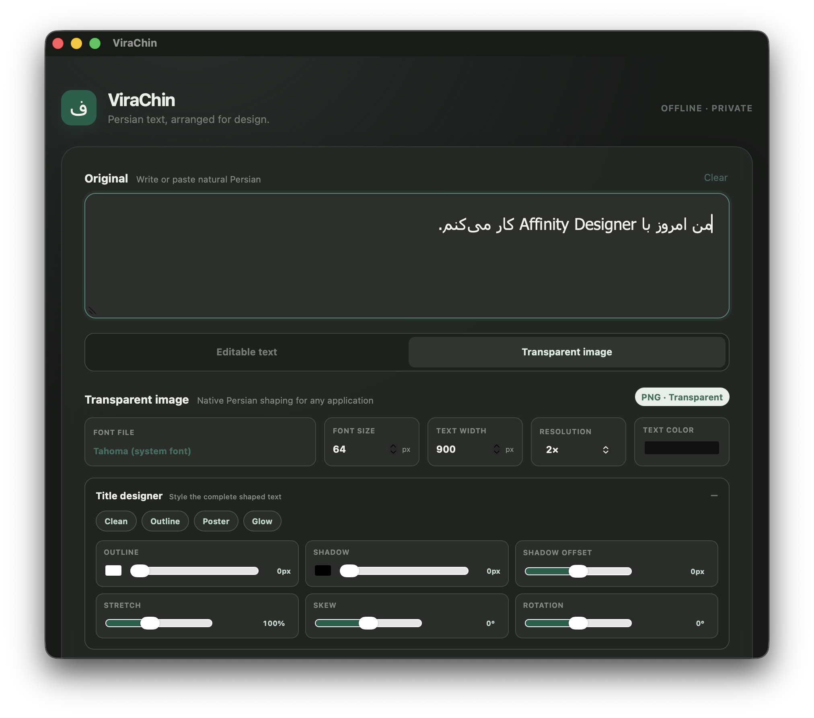

ViraChin prepares editable Persian text for applications with incomplete right-to-left support, and creates transparent title artwork using fonts already on your Mac.
ویراچین متن فارسی را برای نرمافزارهای طراحی آماده میکند؛ بدون اینترنت، بدون حساب کاربری و بدون فرستادن متن شما به جایی.
Free beta · Apple silicon and Intel · The current 0.1.0 download carries the former FarsiFix name.
100% offlineNo server or connection required
Your text stays yoursNo accounts, analytics, or storage
Built for real workflowsValidated first with Affinity Designer
A small utility with one clear job
From natural Persian to design-ready output.
01
Write naturally
Paste ordinary Persian text exactly as you would write it anywhere else.
02
Prepare it locally
Choose editable compatibility text or transparent title artwork. Nothing leaves your Mac.
03
Place it in your design
Copy the result into Affinity Designer or export transparent PNG artwork for any application.
Two focused modes
Editable when you need control. Visual when you need freedom.
01
Editable compatibility text
Prepare Persian text for left-to-right renderers while preserving meaningful Unicode details such as ZWNJ.
Adjustable line length for Affinity text frames
Instant conversion and codepoint inspection
Copy-ready output that remains editable
02
Transparent title artwork
Use any local TTF or OTF font to create distinctive Persian titles with a transparent background.
Direct word and letter selection
Precise spacing, scale, rotation, and position
Transparent PNG output for any design app
Designed to stay out of the way
A calm workspace for difficult text.

Editable modeNatural Persian in, compatibility text out—with the line length under your control.

Transparent-image modeShape a title down to individual words and letters, then export it cleanly.
Install the beta
Download. Open safely. Start designing.
The current free beta is ad-hoc signed but not notarized by Apple. macOS will block the first normal launch; use the documented “Open Anyway” process in Privacy & Security.